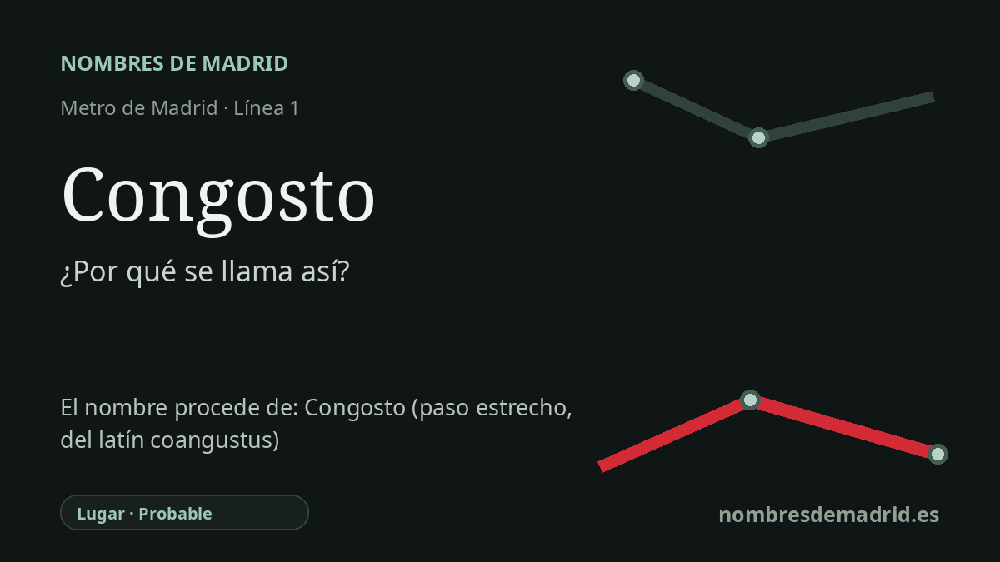

Publicado el · Investigación de Nombres de Madrid · Cómo verificamos cada origen · 9 fuentes consultadas
Respuesta rápida
La estación de Congosto toma su nombre de la calle del Congosto y del entorno de la Colonia Congosto, en Villa de Vallecas. La palabra congosto significa desfiladero o paso estrecho entre montañas y procede del latín coangustus.
La historia del nombre
La estación de Congosto toma su nombre, ante todo, de su entorno urbano inmediato. El Consorcio Regional de Transportes sitúa sus accesos en la calle del Congosto y en la plaza de Congosto, y el Callejero histórico oficial del Ayuntamiento de Madrid registra la calle del Congosto y el camino del Congosto en Villa de Vallecas desde el 28 de mayo de 1971. Por tanto, el nombre llega al Metro a través de una calle y de un área local, no de una persona, institución o acontecimiento.
Detrás de ese nombre local hay una antigua palabra geográfica. En español, un congosto es un desfiladero o garganta estrecha entre montañas. La Real Academia Española deriva la palabra del latín coangustus, y Toponomasticon Hispaniae encuadra formas relacionadas, como CŎNGǓSTU y CŎNGǓSTA, en el campo semántico de las depresiones o estrechamientos del relieve.
Eso no significa que la estación esté junto a un gran cañón. La documentación más sólida localizada para Madrid prueba la existencia de la calle del Congosto, la plaza de Congosto y la Colonia Congosto, mientras que el significado paisajístico pertenece a la historia general de la palabra y a otros topónimos semejantes de España. Toponomasticon Hispaniae resulta especialmente útil porque explica cómo congosto y congosta se convirtieron a menudo en nombres de lugares asociados a valles encajados, gargantas fluviales y pasos estrechos.
La estación conserva también una etapa moderna del crecimiento de Vallecas. El entorno de Congosto se sitúa al sur del casco histórico de Villa de Vallecas, cerca de promociones de vivienda descritas por estudios urbanos y culturales como parte de la expansión periférica de Madrid en la segunda mitad del siglo XX. Un estudio académico sobre las imágenes de Vallecas en el cine identifica la calle Congosto y la Colonia Congosto como localización de Villa de Vallecas en aquella periferia urbana de la Transición.
La estación abrió con la prolongación de la línea 1 desde Miguel Hernández hasta Congosto en 1999, tras una campaña oficial de inauguración fechada el 3 de marzo de 1999 y con puesta en servicio indicada al día siguiente. Dejó de ser cabecera sur cuando la línea se prolongó hasta Valdecarros en mayo de 2007. Además, algunos usos de transporte han conservado el nombre Barrio de Vilano para la zona, por lo que la formulación más prudente es: llamada por la calle del Congosto y el área local de Congosto, cuyo nombre procede de una palabra española para un desfiladero estrecho.